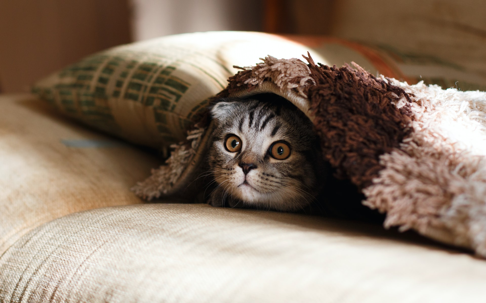
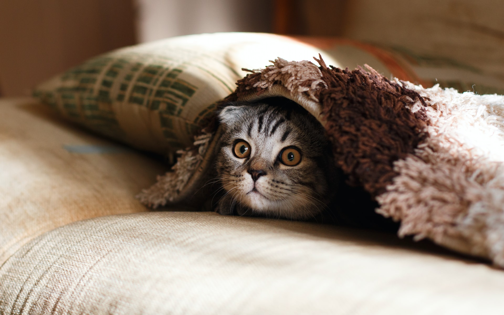

Die Katze ist ein Haustier, sie gehört zu den Säugetieren. Das Männchen der Hauskatze ist die Katze
Katzen findet man in allen Höhenlagen von Meeresniceau bis auf 6000 Meter Höhe und in allen Lebensräumen von Wüsten bis tropische Regenwäalter. Sie kommen auf allen Kontinenten außer Australien und der Antarktis vor.
Katzen können bis zu 47 km/h schnell laufen Katzen schlafen die meiste Zeit ihres Lebens. Man schätzt, dass sie 14-16 Stunden oder 70% ihres Lebens schlafen. Katze miauen in erster Linie nur für Menschen. Die Kommunikation mit anderen Katzen findet über Körpersprache statt Diem älteste Katze wunde 38 Jahre alt.
 
Link1
Link2
About Seite

Link1
Link2
About Seite